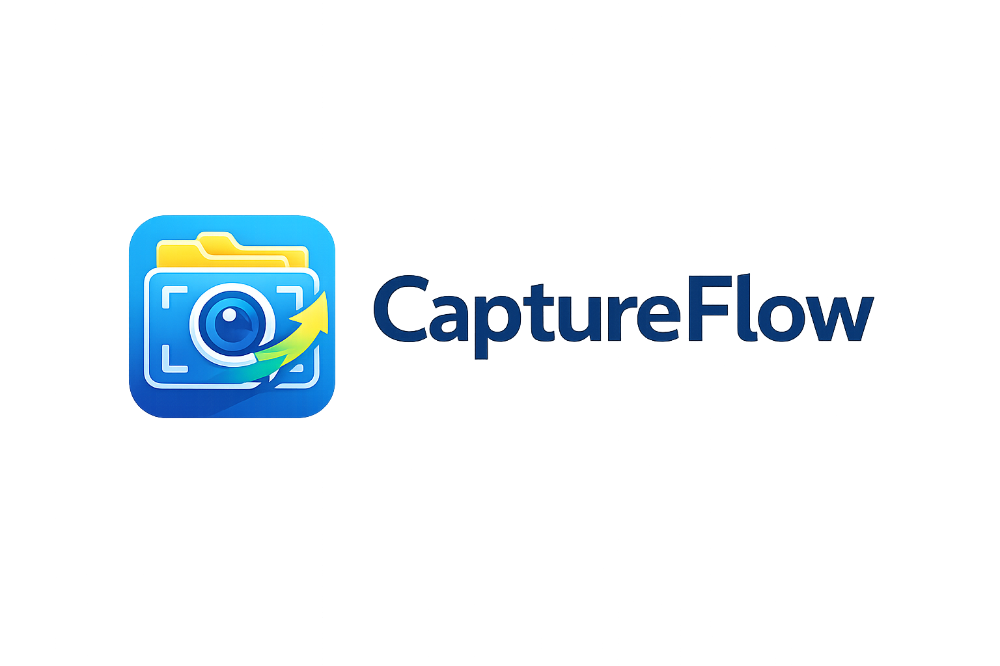
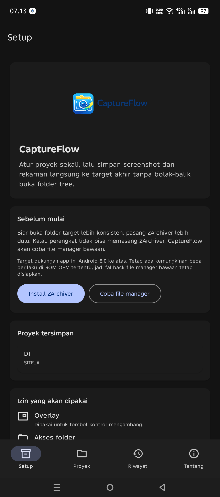
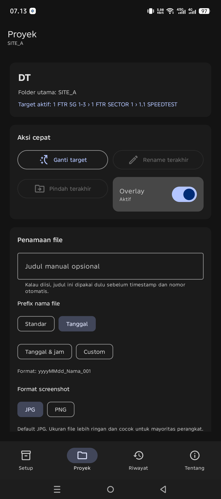
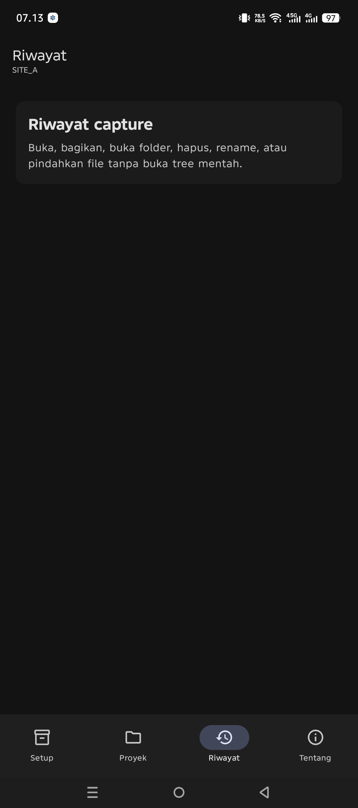
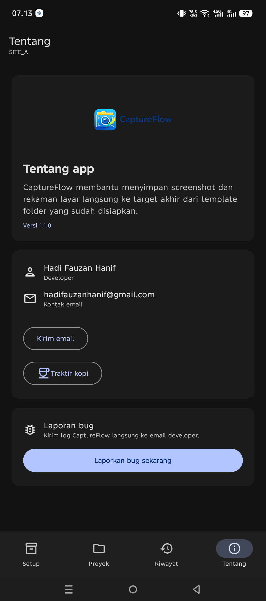

Panduan singkat CaptureFlow NW
Panduan ini dibuat untuk pengguna. Tujuannya sederhana: supaya screenshot dan rekaman layar Anda langsung masuk ke folder yang benar tanpa ribet.
CaptureFlow NW membantu apa
Simpan ke tempat yang tepat
Anda tidak perlu membuka tree folder penuh setiap kali ingin menyimpan hasil tangkapan.
Lebih cepat saat kerja lapangan
Pilih target aktif sekali, lalu lanjut tangkap layar atau rekam dari overlay.
Mulai dalam 4 langkah
- Pilih folder utama tempat semua hasil akan disimpan.
- Pilih template folder yang ingin dipakai.
- Pilih target aktif pada layar Proyek.
- Gunakan overlay untuk Screenshot atau Mulai rekam.

Fitur utama: layar Proyek

Fitur utama: Riwayat
Kalau target tadi salah
Buka Riwayat lalu pindahkan file ke target akhir yang benar.
Kalau nama file perlu dirapikan
Gunakan aksi Rename agar hasil dokumentasi Anda lebih mudah dicari.

Tips pemakaian
Pakai JPG untuk kerja harian
Format JPG adalah pilihan default karena ukuran file lebih ringan dan lebih hemat ruang simpan.
Pakai PNG saat butuh detail tajam
Kalau Anda perlu gambar yang lebih detail, ubah format screenshot ke PNG dari layar Proyek.
Hal yang perlu diperhatikan
Butuh bantuan?
Kalau Anda menemukan kendala, buka halaman Tentang di app lalu gunakan fitur laporan bug atau hubungi developer melalui email.
